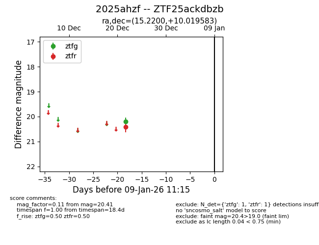
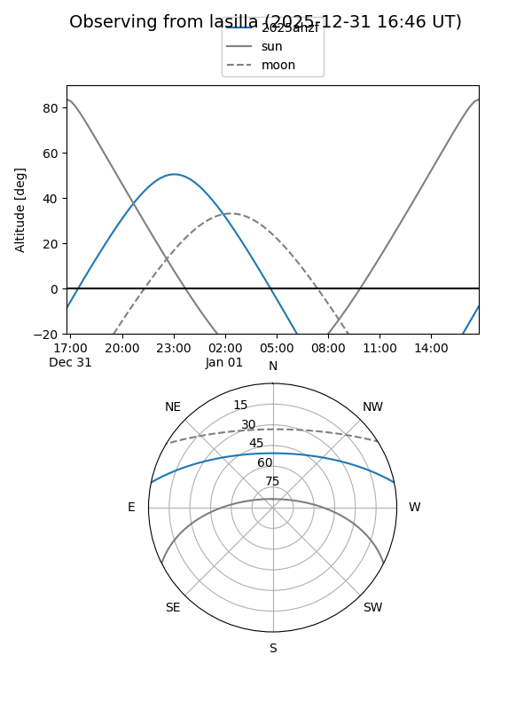
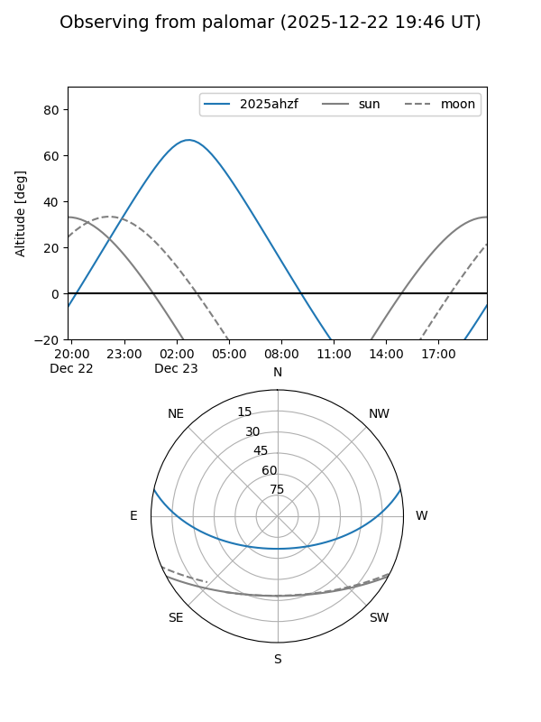

2025ahzf
Target 2025ahzf at 2025-12-24 16:17
Aliases and brokers:
FINK: fink-portal.org/ZTF25ackdbzb
Lasair: lasair-ztf.lsst.ac.uk/objects/ZTF25ackdbzb
ALeRCE: alerce.online/object/ZTF25ackdbzb
TNS: wis-tns.org/object/2025ahzf
YSE: ziggy.ucolick.org/yse/transient_detail/2025ahzf
alt names
ZTF25ackdbzb (ztf,fink_ztf)
2025ahzf (tns,yse)
Coordinates:
equatorial (ra, dec) = 15.2200,+10.01958
equatorial (HMS+DMS) = 01:00:52.79,+10:01:10.50
galactic (l, b) = (126.7768,-52.78166)
Flags:
Photometry:
last ztfg=20.20, ztfr=20.41
1 ztfg, 1 ztfr detections
Lightcurve

Visibility


Additional plots